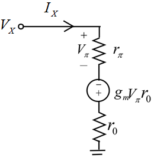

Step 1:
Refer to the circuit in Figure P10.48 in the textbook. Redraw the circuit by replacing the BJT with its small-signal, hybrid- model as shown in Figure 1. Short the source
model as shown in Figure 1. Short the source  and apply a test voltage
and apply a test voltage  and assume the current flowing through the circuit due to the voltage source is
and assume the current flowing through the circuit due to the voltage source is  .
.
Figure 1
Step 2:
Now observe from the circuit in Figure 1 that the resistors and are in series and they are connected in parallel to the resistor .
.
Consider the dependent current source connected in parallel to the resistance  . Convert it into a voltage source in series with the resistance
. Convert it into a voltage source in series with the resistance  . Draw the simplified circuit as shown in the following Figure 2.
. Draw the simplified circuit as shown in the following Figure 2.
Figure 2
Step 3:
Observe from Figure 2 that the current leaving the resistor  and entering the node following it is
and entering the node following it is  . Apply current division principle to the resistor
. Apply current division principle to the resistor  to determine the current flowing through it. Denote it as
to determine the current flowing through it. Denote it as .
.
Determine the voltage across the resistor  .
.
The resistors  and
and  are in series. Hence the series equivalent of the two resistors is,
are in series. Hence the series equivalent of the two resistors is,
The series equivalent of the resistors is parallel to the resistor . Hence the parallel equivalent of the two resistors is,
. Hence the parallel equivalent of the two resistors is,
Since the current flowing through the elements is same the same current flows throughout the circuit. Apply the Kirchhoff’s voltage law around the loop of the circuit in Figure 3.
Substitute the expression for  in the Kirchhoff’s voltage law equation.
in the Kirchhoff’s voltage law equation.
Simplify further.
Simplify further.
Hence, the output resistance of the BJT circuit in Figure P10.48 is determined and its value  is.
is.
To calculate the maximum value of  , substitute in the expression of
, substitute in the expression of  .
.
The output resistance  is maximum when. So, approximate. Now, the output resistance is,
is maximum when. So, approximate. Now, the output resistance is,
Thus, the maximum value of the resistance  is .
is .
Step 4:
Now, set  to zero and choose the value of the emitter resistance so large that the current flowing through it becomes nearly zero. Hence, the resistance can be thought as open-circuited. Draw the simplified circuit as shown in the following Figure 4.
to zero and choose the value of the emitter resistance so large that the current flowing through it becomes nearly zero. Hence, the resistance can be thought as open-circuited. Draw the simplified circuit as shown in the following Figure 4.
Figure 4
Step 5:
Now represent the dependent current source connected in parallel to the resistance  as a voltage source
as a voltage source  in series with the resistance
in series with the resistance  . Draw the simplified circuit as shown in the following Figure 5.
. Draw the simplified circuit as shown in the following Figure 5.

Figure 5
Determine the value of the voltage  .
.
Now, apply Kirchhoff’s voltage law around the loop of the circuit in Figure 5.
Thus, the current in the base in the  generator is
generator is  .
.
Thus, expression for  is.
is.
Step 6:
Represent the current  in terms of
in terms of  .
.
Consider the current flowing through resistance  as I.
as I.
Thus, represent  in terms of .
in terms of .
Observe from Figure 4 that the current flowing through resistance,  is .
is .
Thus, the current in the base, in the generator and in  in terms of
in terms of  are and respectively.
are and respectively.
The currents on the equivalent circuit with resistance  set to infinity are shown in Figure 4.
set to infinity are shown in Figure 4.